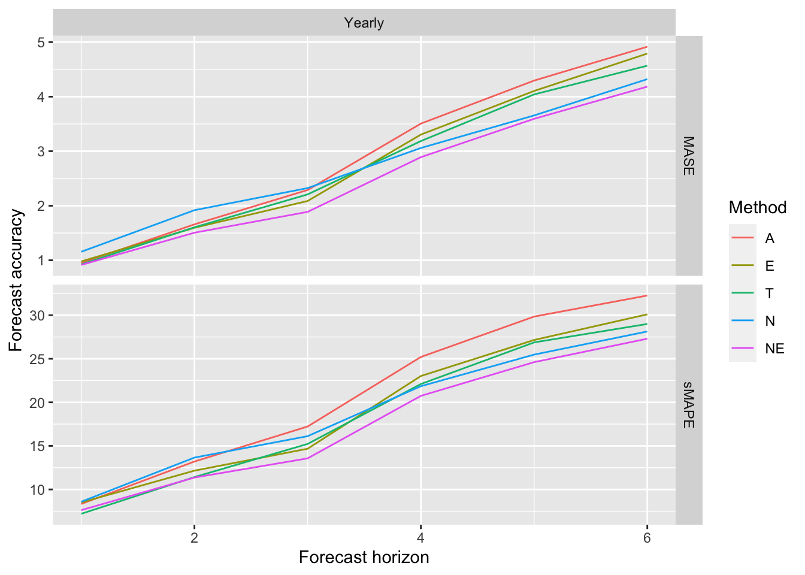
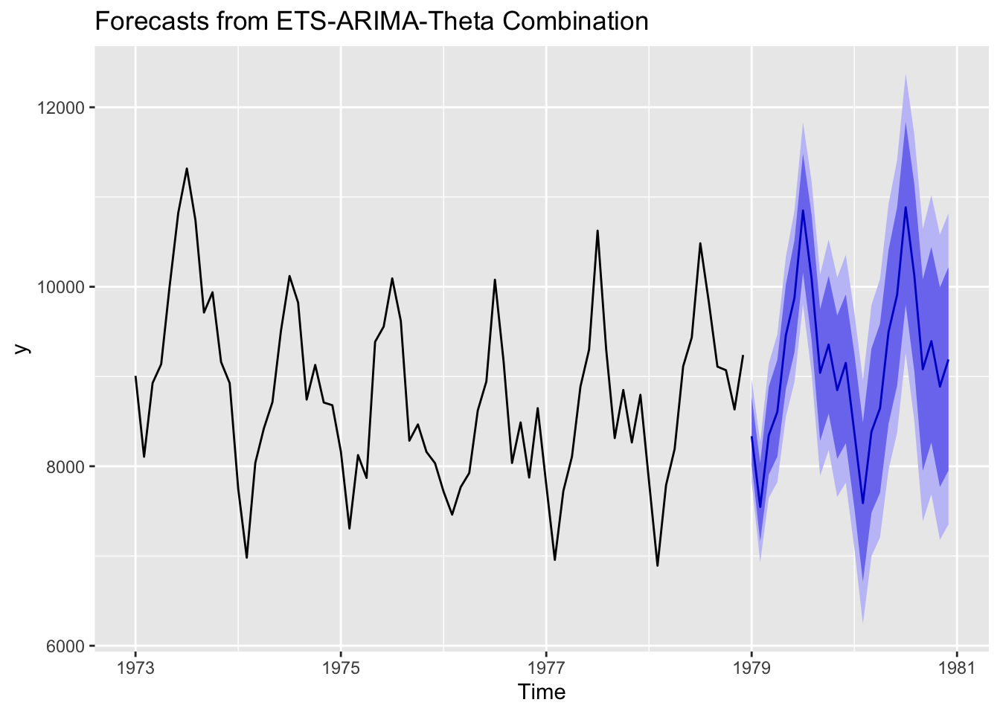

![]()
benchmarks <- function(y, h) {
require(forecast)
# Compute four benchmark methods
fcasts <- rbind(
N = snaive(y, h)$mean,
E = forecast(ets(y), h)$mean,
A = forecast(auto.arima(y), h)$mean,
T = thetaf(y, h)$mean)
colnames(fcasts) <- seq(h)
method_names <- rownames(fcasts)
# Compute all possible combinations
method_choice <- rep(list(0:1), length(method_names))
names(method_choice) <- method_names
combinations <- expand.grid(method_choice) %>% tail(-1) %>% as.matrix()
# Construct names for all combinations
for (i in seq(NROW(combinations))) {
rownames(combinations)[i] <- paste0(method_names[which(combinations[i, ] > 0)],
collapse = "")
}
# Compute combination weights
combinations <- sweep(combinations, 1, rowSums(combinations), FUN = "/")
# Compute combinations of forecasts
return(combinations %*% fcasts)
}Look at this: https://robjhyndman.com/hyndsight/benchmark-combination/
library(Mcomp)Loading required package: forecastRegistered S3 method overwritten by 'quantmod':
method from
as.zoo.data.frame zoo library(tidyverse)── Attaching packages ─────────────────────────────────────── tidyverse 1.3.1 ──✓ ggplot2 3.3.5.9000 ✓ purrr 0.3.4.9000
✓ tibble 3.1.6.9001 ✓ dplyr 1.0.8.9000
✓ tidyr 1.1.4.9000 ✓ stringr 1.4.0.9000
✓ readr 2.1.2 ✓ forcats 0.5.1 ── Conflicts ────────────────────────────────────────── tidyverse_conflicts() ──
x dplyr::filter() masks stats::filter()
x dplyr::lag() masks stats::lag()# Compute "symmetric" percentage errors and scaled errors
errors <- map(M3[1:20], function(u) {
train <- u$x
test <- u$xx
f <- benchmarks(train, u$h)
error <- -sweep(f, 2, test)
pcerror <- (200 * abs(error) / sweep(abs(f), 2, abs(test), FUN = "+")) %>%
as_tibble() %>%
mutate(Method = rownames(f)) %>%
gather(key = h, value = sAPE, -Method)
scalederror <- (abs(error) / mean(abs(diff(train, lag = frequency(train))))) %>%
as_tibble() %>%
mutate(Method = rownames(f)) %>%
gather(key = h, value = ASE, -Method)
return(list(pcerror = pcerror, scalederror = scalederror))
})
# Construct a tibble with all results
M3errors <- tibble(
Series = names(M3[1:20]),
Period = map_chr(M3[1:20], "period"),
se = map(errors, "scalederror"),
pce = map(errors, "pcerror")) %>%
unnest() %>%
select(-h1, -Method1) %>%
mutate(h = as.integer(h),
Period = factor(str_to_title(Period),
levels = c("Monthly","Quarterly","Yearly","Other")))Warning: `cols` is now required when using unnest().
Please use `cols = c(se, pce)`accuracy <- M3errors %>%
group_by(Period, Method, h) %>%
summarize(MASE=mean(ASE), sMAPE=mean(sAPE)) %>%
ungroup()`summarise()` has grouped output by 'Period', 'Method'. You can override using
the `.groups` argument.# Find names of original methods
original_methods <- unique(accuracy[["Method"]])
original_methods <- original_methods[str_length(original_methods)==1L]
# Compute summary table of accuracy measures
accuracy_table <- accuracy %>%
group_by(Method,Period) %>%
summarise(
sMAPE = mean(sMAPE, na.rm = TRUE),
MASE = mean(MASE, na.rm = TRUE) ) %>%
arrange(MASE) %>% ungroup()`summarise()` has grouped output by 'Method'. You can override using the
`.groups` argument.best <- accuracy_table %>% filter(MASE==min(MASE))
accuracy_table <- accuracy_table %>%
filter(Method %in% original_methods | Method %in% best$Method) %>%
arrange(Period, MASE) %>%
select(Period, Method, sMAPE, MASE)
knitr::kable(accuracy_table)| Period | Method | sMAPE | MASE |
|---|---|---|---|
| Yearly | NE | 17.53472 | 2.495935 |
| Yearly | N | 18.97091 | 2.739117 |
| Yearly | T | 18.63697 | 2.755394 |
| Yearly | E | 19.26875 | 2.810513 |
| Yearly | A | 21.01195 | 2.936040 |
order <- accuracy_table %>% group_by(Method) %>%
summarise(MASE = mean(MASE)) %>% arrange(MASE) %>%
pull("Method") %>% rev()
accuracy %>%
gather(key = "Measure", value = "accuracy", sMAPE, MASE) %>%
filter(Method %in% unique(accuracy_table$Method)) %>%
mutate(Method = factor(Method, levels=order)) %>%
ggplot(aes(x = h, y = accuracy), group = Method) +
geom_line(aes(col = Method)) +
facet_grid(rows = vars(Measure), cols=vars(Period), scale = "free") +
xlab("Forecast horizon") + ylab("Forecast accuracy")Warning in facet_grid(rows = vars(Measure), cols = vars(Period), scale =
"free"): partial argument match of 'scale' to 'scales'
eat_ensemble <- function(y, h = ifelse(frequency(y) > 1, 2*frequency(y), 10)) {
require(forecast)
fets <- forecast(ets(y), h)
farima <- forecast(auto.arima(y), h)
ftheta <- thetaf(y, h)
comb <- fets
comb$mean <-(fets$mean + farima$mean + ftheta$mean)/3
comb$method <- "ETS-ARIMA-Theta Combination"
return(comb)
}
USAccDeaths %>% eat_ensemble() %>% autoplot()
Reuse
Citation
BibTeX citation:
@online{dewitt2018,
author = {Michael DeWitt},
title = {Forecasting {Benchmarks}},
date = {2018-07-11},
url = {https://michaeldewittjr.com/programming/2018-07-11-forecasting-benchmarks},
langid = {en}
}
For attribution, please cite this work as:
Michael DeWitt. 2018. “Forecasting Benchmarks.” July 11,
2018. https://michaeldewittjr.com/programming/2018-07-11-forecasting-benchmarks.